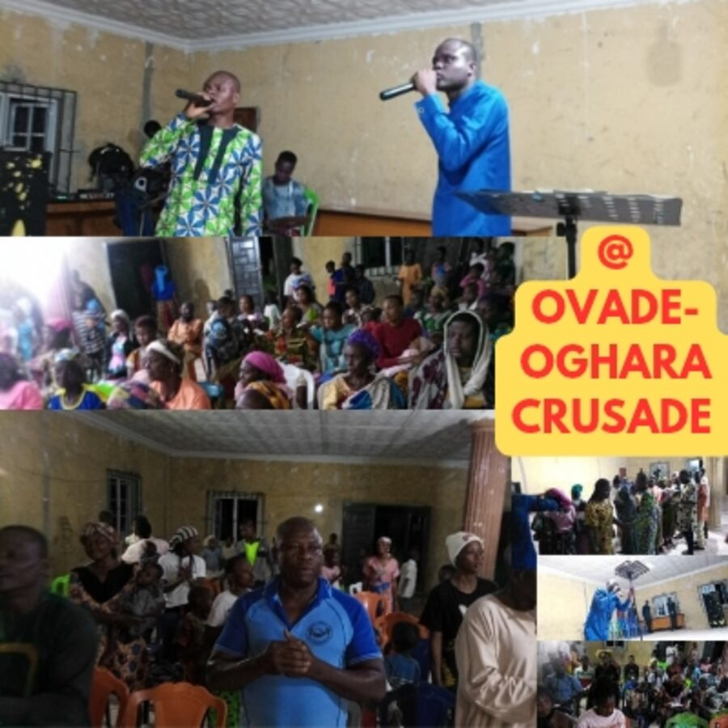

Faith of Our
Fathers Radio
Listen to inspiring Bible messages, worship and God's Word.
Listen LiveWelcome to
Reaching • Reviving • Transforming
A global Christian ministry committed to proclaiming the glorious Gospel of Jesus Christ to every nation, tribe, people and language.
One Lord. One Faith. One Mission. For a Better and Brighter World.

Our divine assignment
Raising an END-TIME ARMY OF CHRIST
Apostles, Prophets, Pastors, Teachers, Evangelists, Kingdom Financiers and Sound Believers
“Go ye into all the world, and preach the gospel to every creature.”Mark 16:15 (KJV)
Listen to inspiring Bible messages, worship and God's Word.
Listen LiveConnect with believers worldwide for fellowship and spiritual growth.
Join NowUnite in prayer for revival, souls and the nations.
Pray With UsReflect on your daily walk with God and spiritual growth.
Get the AppExplore Scripture through guided study and deeper understanding.
Study NowRead, study and meditate on God's Word wherever you are.
Read the BibleMessage from the president
Christ is not divided. There is no name of a church in heaven. Whether through death or the rapture, all who are truly born again and live a Christlike life of holiness belong to one family in Christ, with one heavenly hope.
Heavenly Key Evangelistic Movement
Uniting the Body of Christ and upholding the faith of our fathers; raising an end-time army for Christ—apostles, pastors, teachers, prophets, evangelists, Kingdom financiers and sound believers.
With a burden to restore apostolic Christianity, we earnestly contend for the faith once delivered unto the saints, protecting, preserving and promoting the ancient landmarks.
A HOPE FOR A GENERATION
Join, support and partner with the Jesus Revival Movement. Together, we take Christ to the nations of the world.
Meet the PastorLatest from our ministry blog
Read our latest messages, teachings and ministry updates.
Loading the latest posts…
Recent posts could not be loaded right now. Read the latest articles on our blog →
A Call to Watchfulness
Take heed to your walk with God. Remain steadfast in the faith once delivered unto the saints.
Examine your heart and be sure of your salvation in Jesus Christ.
John 3:3Follow peace with all people and holiness in your daily life.
Hebrews 12:14Remain spiritually alert and steadfast in prayer.
Matthew 26:41Hold fast to the truth of God's Word and the faith delivered to the saints.
Jude 1:3Live prepared for the coming of our Lord Jesus Christ.
Matthew 24:44Discover the steps to salvation and begin your walk with Jesus Christ.
Steps to Salvation